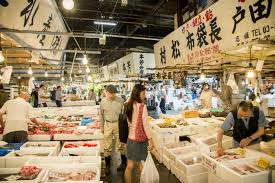
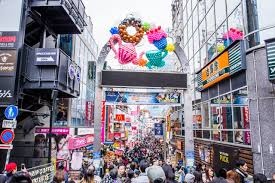
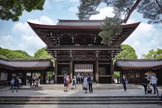
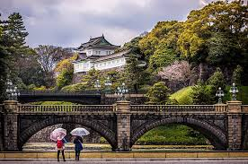
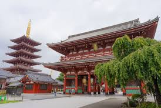

Entre todos os hoteis de Tóquio, se destaca entre eles o Hoteis Palácio Tangará e o Novotel São Paulo Morumbi
Tóquio possui uma variedade de atividade para visitar e contemplar sua viagem, sendo um dos lugares com mais muvuca, fica o Mercado Tsukiji, na qual é um mercado de peixe famosíssimo na cidade, sendo considerado um dos maiores do mundo.
Para pessoas que gostam de conhecer novas cultura, não pode deixar de fora de visitar a Rua Takeshita Dori, o Santuário Meiji Jingu, Palácio Imperial e o Templo Senjo-ji
   Agrademos a preferencia
Todos os Direito reservado. ©